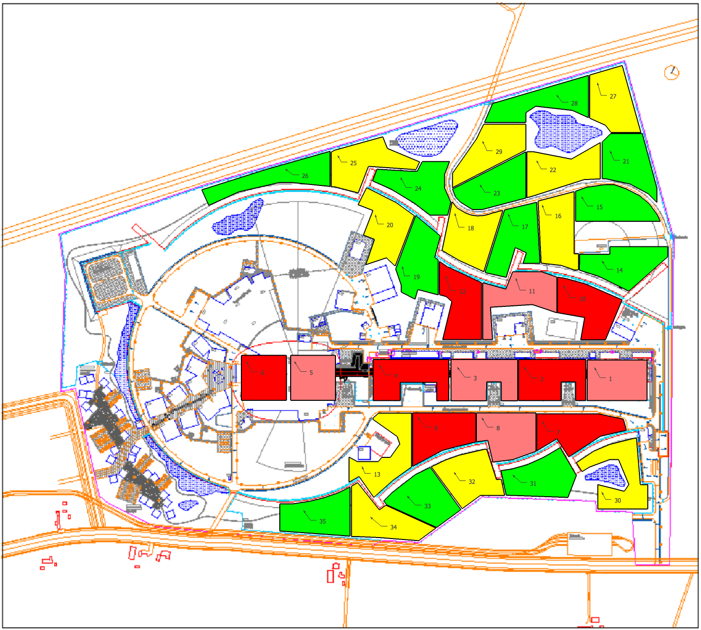

Skåne Solar Energy Hub
Sunny Sweden
(read more...)
A Solar Powered Particle Accelerator
(read more...)
How Green is Solar?
(read more...)
Solar Heat
(read more...)
Hybrid, the Best of Both Worlds?
(read more...)
District Heating: The Economy of Scale
(read more...)
A Possible Hybrid Solar Hub
(read more...)
A Research Proposal
(read more...)
Summary
(read more...)
Learn More...
Documentation
Concept Presentation
Concept Write-up
LTH Masters Thesis
Lund vs Casablanca Comparison
The Team
Mats Alakula-LTH
Carlos Martins-ESS
David McGinnis-ESS
Jörgen Svensson-LTH
Links
Solar Calculator
PVGIS
Git Repository
se-esss-litterbox
The Warm and Clean City
